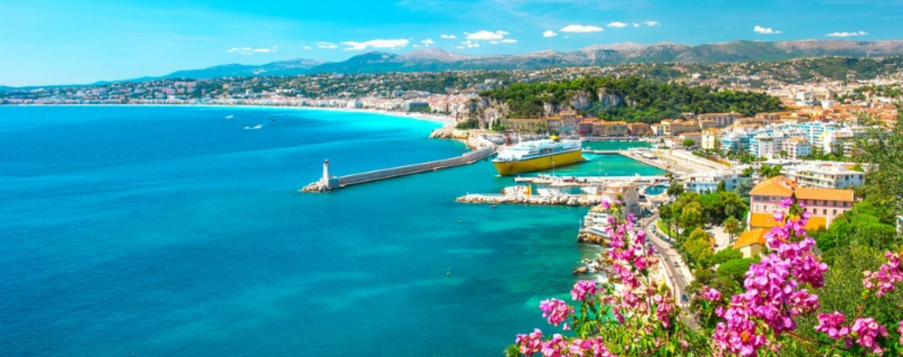
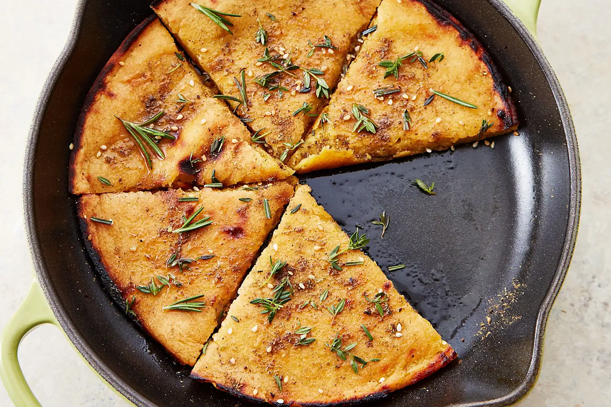
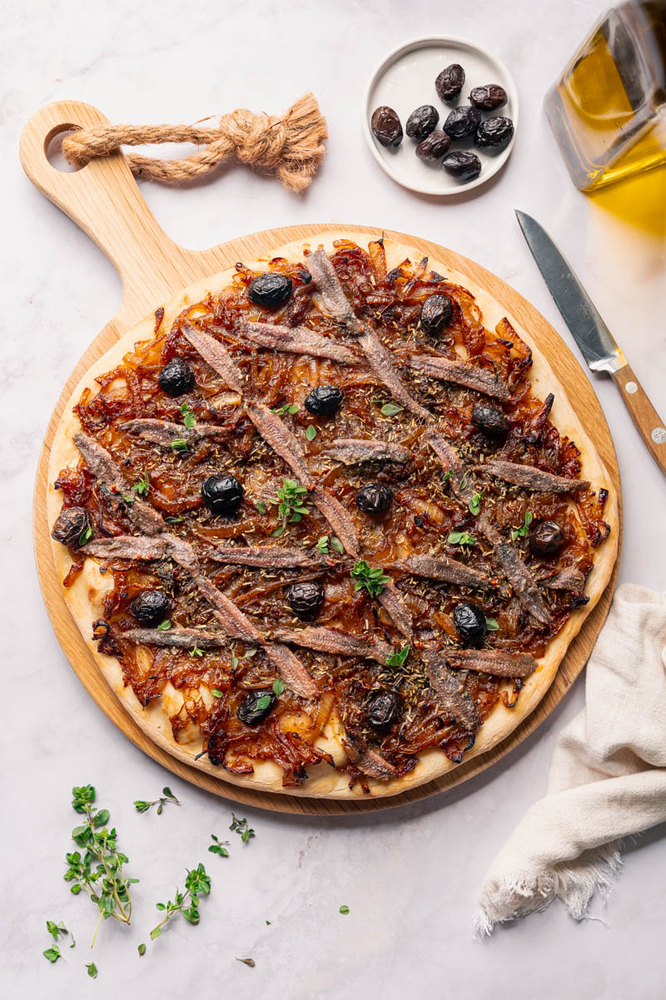
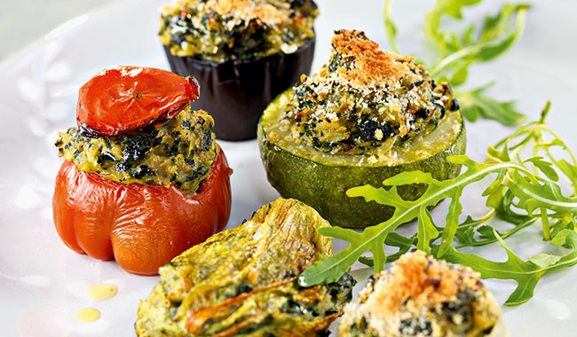

Nice, the jewel of the French Riviera, is a sun-drenched city where the azure waters of the Mediterranean meet the rugged foothills of the Southern Alps. Known for its dazzling Promenade des Anglais, pastel-colored old town, and vibrant outdoor markets, Nice is one of France's most beloved seaside destinations. The city's unique Niçoise culture — shaped by centuries of Italian and French influence — is reflected in its distinct cuisine, architecture, and art scene. With warm weather, sandy beaches, and rich cultural offerings, Nice is a year-round destination that never fails to enchant its visitors.

A thin, crispy, golden pancake made from chickpea flour, olive oil, salt, and pepper, best eaten hot.

The pan bagnat is a sandwich that is a specialty of Nice, France. The sandwich is composed of pain de campagne, a whole wheat bread, enclosing a salade niçoise, a salad composed mainly of raw vegetables, hard boiled eggs, anchovies and/or tuna, and olive oil, salt, and pepper.

Pissaladière is a dish of flatbread with toppings from the region of Provence and the French city of Nice. It is often compared to pizza

Petits Farcis Niçois are a classic Provençal dish of small summer vegetables—such as tomatoes, zucchini, onions, and peppers—hollowed out and stuffed with a mixture of minced meat (veal, beef, or pork), herbs, garlic, and breadcrumbs. Often served warm or at room temperature, they are baked in olive oil.